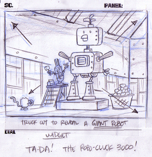
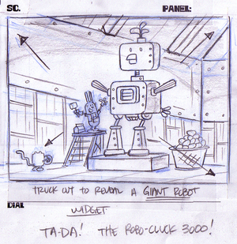
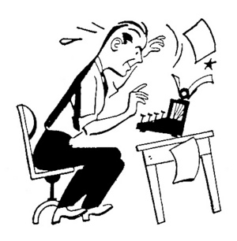
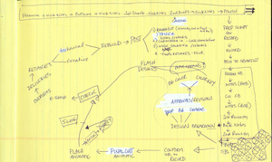
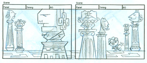
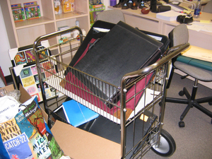

The Robo-Cluck 3000

Every good show needs a giant robot!
Here is our first one!
{kind=link}
The Robo-Cluck 3000. A robotic chicken that lays over a hundred eggs a minute.
« April 2005 | Main | June 2005 »

Every good show needs a giant robot!
Here is our first one!
The Robo-Cluck 3000. A robotic chicken that lays over a hundred eggs a minute.
I imagine the inside of Walden's house is a bit like a museum.
And here's an example of what it might look like!

When the show was green lit back in January, I went to NYC to meet with Nick Jr..
While I was in town Exec. Producer Fred Seibert arranged for me to meet with a potential writer for the show named Fred Stroppel. He turned out to be a really nice guy with a lot of experience writing for both pre-schoolers and adults.
But he was based out of NY. The time difference, The lack of face-to-face time. "What a pain in the butt that would be" I thought to myself.
Well as it turned out there has been no pain involved at all!
Since then Fred has been turning out great premises and scripts. And as of a few weeks ago he joined us full time as our Story Editor.
So without further ado, let's meet Fred Stroppel (in his own words):
Fred was born and raised in Glen Cove, N.Y., on the north shore of Long Island, and he still lives there, which is fairly indicative of his lack of initiative. He started writing plays in college, and has never stopped. While waiting for his big break he worked as a bartender at Stroppel's Tavern by the Tracks, established by his great-grandfather back in 1880.
In 1986 Fred became a member of the Courtyard Players in NYC, and two years later they staged his comedy, A Good Man. He has since seen many productions of his work in the city and around the country, including Fortune's Fools, which was performed off-Broadway in 1995, and Actor!, a satire of the entertainment industry which had its premiere in Los Angeles in 2000.
His most recent theatrical thrill was re-uniting Jack Klugman and Brett Somers (who played man and ex-wife on TV's The Odd Couple, and were married in real life) for his evening of one-act plays, Danger, People at Large, in Fairfield, Ct; it was the first time they'd worked together in twenty years, and the night was a great success. Three of his many screenplays have been turned into feature films; all three made a triumphant march straight to video, and were greeted there by resounding public indifference.
Fred turned to children's television in 1998 when he joined HBO's A Little Curious as a staff writer, and two years later he became the story editor for Oswald on Nickelodeon. He also served as a story editor on Jojo's Circus and wrote for Clifford's Puppy Days.
But all of that was just a warm-up for the exciting thrill-a-minute adventure that is Wubby, Widget and Walden!
It has been a real pleasure to work with Fred. He is funny, dependable, and extremely talented.
We are certainly lucky to have someone of his caliber in charge of our writing.
Thanks for joining the team Fred!

Have you ever wondered what goes on in the mind of a line producer?
Well this production "flow chart" that I found on our line producer Andrea Romero's desk might provide some answers.
Yikes!
I'm glad I draw!

Walden's house is filled with interesting things.
So of course he has a hallway filled with the busts of famous writers and philosophers.

Due to ads on the Animation World Network website, a union announcement, and plain old word of mouth, my office at Film Roman has been deluged by portfolios.
I didn't manage to get a great photo but trust me it was a fire hazard!
Big thanks to Shellie Gillespie for co-ordinating all the portfolios and to everyone who has submitted their work.
Slowly but surely we are starting to put together a crew of very talented folks.
We will start to introduce them as soon as I can get some witty bio's put together.
This week I have been busy boarding the first episode. We will eventually have many storyboard artists working on the show but I wanted to do the first one to help set the style and tone of the show.
It's very exciting to see the characters take the next step towards truely coming to life!
And check out that fancy Wubby, Widget, and Walden storyboard paper! Yeah, that's still the title of the show (for now).
A BIG BIG thanks to Film Roman/IDT for giving our work space an extreme makeover!
Over the past few weekends the nice folks in the Studio Services department have come in and painted not only the walls but the cubes. Bit by bit they have changed what was a drab scene from the movie Office Space into something that makes puts a smile on my face every time I walk down the hall.
The photos don't due it justice but trust me it looks really great!
Thanks to Scott Greenberg for helping to make this all happen!
And thanks to Studio Services gang for giving up your weekends to bring a little color into our lives!
{kind=link}
{kind=link}
{kind=link}
{kind=link}
{kind=link}
{kind=link}
{kind=link}
{kind=link}
{kind=link}
{kind=link}
{kind=link}
{kind=link}
{kind=link}
{kind=link}
{kind=link}